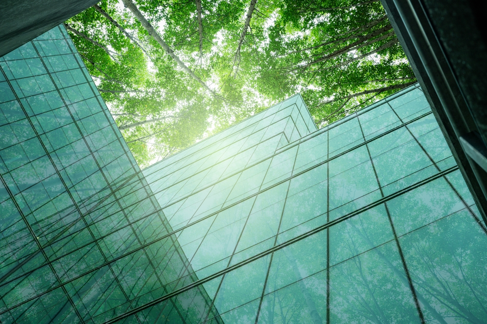

What genuinely makes Family Capital different is that we've built an ecosystem — the people, the technology, the platforms, the advice — all designed to work together in harmony.
We want one place where everything connects. When you log in, you see your entire financial life — not several different places to go. We built our own technology to make that possible, and because we own it, we're constantly improving it. It evolves every day.
That commitment to continuous improvement isn't a slogan. It's just what happens when you care enough to build something yourself.

Five principles that shape everything we do